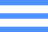

<div class="navBar_container">
    <button class="navBar_composeButton" ui-sref="compose">compose</button>
    <ul>
        <li ui-sref="message-list({boxId: 'inbox'})" ui-sref-active="active">Inbox</li>
        <li ui-sref="message-list({boxId: 'sent-mail'})" ui-sref-active="active">Sent mail</li>
        <li ui-sref="trash-list" ui-sref-active="active">Trash</li>
        <li ui-sref="contacts-list" ui-sref-active="active">Contacts</li>
    </ul>
</div>

<!-- next content appears if screen width is less than 569 px
<button class="navBar_openSliderMenuButton" ng-class="{sliderMenuClosed: !$ctrl.isSliderMenuOpened}"
    ng-click="$ctrl.openSliderMenu()"></button>

<div class="navBar_sliderMenuContainer" ng-class="{sliderMenuOpened: $ctrl.isSliderMenuOpened}">
    <button class="navBar_closeSliderMenuButton" ng-click="$ctrl.closeSliderMenu()">Close menu</button>
    <button class="navBar_composeButton" ui-sref="compose">compose</button>
    <ul>
        <li ng-click="$ctrl.closeSliderMenu()" ui-sref="message-list({boxId: 'inbox'})"
            ui-sref-active="active">Inbox</li>
        <li ng-click="$ctrl.closeSliderMenu()" ui-sref="message-list({boxId: 'sent-mail'})"
            ui-sref-active="active">Sent mail</li>
        <li ng-click="$ctrl.closeSliderMenu()" ui-sref="trash-list"
            ui-sref-active="active">Trash</li>
        <li ng-click="$ctrl.closeSliderMenu()" ui-sref="contacts-list"
            ui-sref-active="active">Contacts</li>
    </ul>
    <logout></logout>
</div>
-->